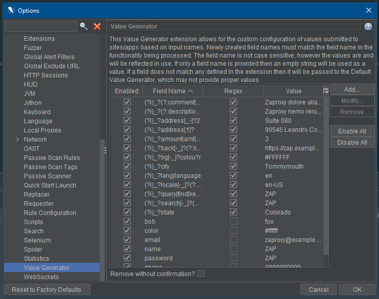

This Form Handler extension allows for the custom configuration of values used in forms based on field names.
With this add-on the user can create new fields for each individual field that they wish to set the value of. Additionally, the user can modify any existing field's name and value to fit the field that they are trying to set. Any field can also be disabled or removed by the user so that the custom values are not used. Field names, values and enabled status will be stored even after a ZAP session has concluded.
The add-on provides a set of default field names that may be found on a form and a corresponding value for each default field. These default values can be disabled, modified and deleted if the user desires.
The Form Handler can be found in the Options. Selecting the Form Handler tab will display a table with all existing values that are currently defined. An example is shown below.
To define additional field values the Add button can be clicked. This will bring up a dialog for the user to provide field information.

Please take note of the following when adding a new field:
The extension allows the user to modify the values and names of existing fields. This can be done by selecting the field that you wish to modify and clicking on the Modify button.

When modifying a field the user is constrained by the same rules as creating a new one. The most common constraint when modifying a field is that the name cannot be the same as an existing field. (i.e. No duplicate fields)
The user can remove fields at any time. To do so simply select the field that you wish to remove and click on the Remove button. Please note that you will be prompted to confirm removal before proceeding unless the Remove without Confirmation box is checked.
A user may find that they do not want to define every field in a form, but rather define a select few within the form.
Any field that is not defined in the form handler add-on will use a ZAP default value that is generated to match each field type.(For example: A text field will have the value "ZAP")